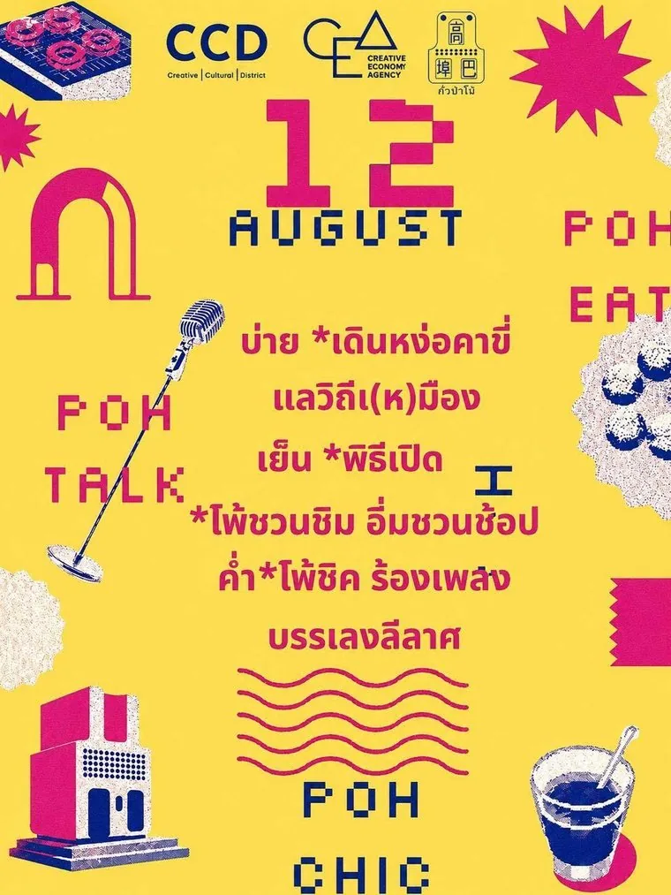

12 สิงหาคม 2569
วันเปิดงาน
-
เดินหง่อคาขี่ แลวิถีเ(ห)มืองเปิดบ้านพื้นที่หลักทั้ง 3 หลัง (78 · 109 · 305)
-
โพ้ชิมของกินพื้นถิ่นที่พวกเราสรรหามาเสิร์ฟให้ผู้มาเยือน
-
พิธีเปิดแบบชาวโพ้
-
THE POH TALK“กั่วป่าโพ้ จีโชว์เมือง” งานเสวนาสร้างสรรค์ ร่วมกันคุยเพื่อสิ่งดี ๆ ให้กั่วป่า
-
โพ้ชิคชิค ๆ ชิล ๆ ไปกับดนตรีและกิจกรรมบันเทิง